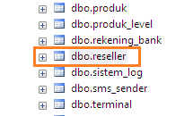
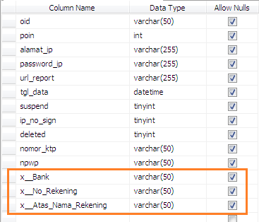
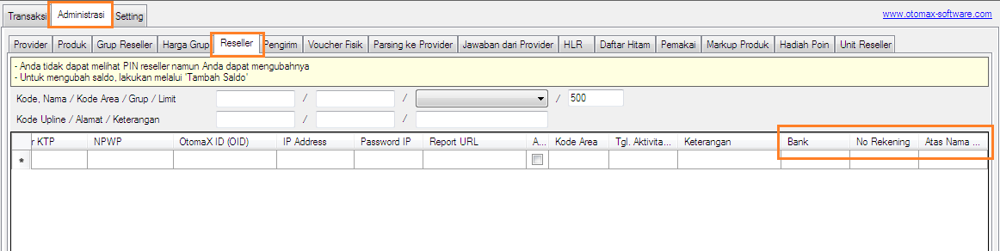

Tambah Kolom Tabel Reseller
Terkadang kita ingin menyimpan data terkait Reseller di dalam software OtomaX, namun kolom tabel tidak bisa ditambah kolom baru guna menyimpan data tertentu. Mulai v4.0.2 ada kabar baik, kabar baiknya, kita dapat menambah kolom tabel Reseller sesuai kebutuhan asalkan edisi OtomaX nya adalah Ultimate. Apabila bukan edisi tersebut bisa upgrade dahulu untuk dapat menggunakan fitur tersebut, tata cara upgrade silahkan klik disini.
Untuk menambah kolom baru di tabel Reseller langkah - langkahnya sebagai berikut:
- Pilih tombol Start, lalu cari dan pilih Microsoft SQL Management Studio -> klik kanan -> pilih Run As Administrator kemudian klik tombol Connect.
-
Klik tanda + di sebelah kiri Databases -> klik tanda + di sebelah kiri otomax -> klik tanda + di
sebelah kiri Tables -> scrool ke bawah
dan cari dbo.reseller

-
Pilih dbo.reseller -> klik kanan -> pilih Design atau Open Design. Di baris terakhir
tambahkan nama kolom yang Anda inginkan dengan format: x__nama_kolom (Ganti nama_kolom dengan nama yang
Anda hendaki). Misalnya ingin menambah kolom Bank, No Rekening dan Atas Nama Rekening maka
ditulis: x__Bank, x__No_Rekening dan x__Atas_Nama_Rekening. Perhatikan dengan seksama gambar di bawah ini:

- Klik icon Save di Tollbar Microsoft SQL Management Studio dan kemudian tutup buka OtomaX.
-
Pada OtomaX pilih Administrasi -> Reseller -> arahkan kursor mouse ke judul tabel -> klik kanan ->
klik Show all columns, maka kolom yang baru dibuat akan muncul di tabel Reseller.

- Selesai
Anda dapat menambah kolom tabel Reseller dengan nama apasaja dan berapa saja dengan tata cara di atas sesuai kebutuhan Anda.